영어의 기본 세 가지와 단어 3,000개
화자는 미국에는 여행 말고 가 본 적이 없는데도, 미국인 친구들이 거의 다 자기를 미국인으로 안다고 소개해요. 그러고는 영어의 뼈대를 딱 세 가지로 나눠요. 단어, 인풋, 발음이에요. 영상의 팁 11개는 모두 이 셋 중 하나에 들어가요.
아래 그림은 영상 왼쪽 위에 붙는 번호 자막을 기둥별로 모은 거예요. 단어에 세 개, 인풋에 세 개, 발음에 다섯 개가 있어요. 발음 쪽이 가장 길다는 게 눈에 띄어요.
팁 ① 단어는 3,000개면 충분해요
화자는 단어 3,000개만 알면 영어 시트콤의 95%를 이해할 수 있다는 연구가 있다고 말해요. 하루 30개씩이면 100일 만에 끝나는 양이에요.
문제는 순서예요. 토플이나 텝스 같은 시험을 준비하면서 실제로는 잘 안 쓰는 어려운 단어부터 외우게 돼요. 외국인이 '생각하다'도 모르면서 '사색에 잠기다' 같은 표현을 먼저 외우는 셈이라고 비유해요. 그래서 가장 많이 쓰는 3,000개 목록부터 보라고 해요.
단어를 두 배 효율로 외우는 법
단어장을 한 장씩 넘기며 쓰고 또 쓰는 방식은 효율이 낮다고 해요. 화자는 그보다 두 배 넘게 효율적인 기법 두 가지를 소개하고, 둘을 한 번에 해 주는 앱을 권해요.
팁 ②-1 간격 반복: 잊을 즈음 다시 봐요
출발점은 1800년대 심리학 연구인 에빙하우스 망각 곡선이에요. 화면의 분홍 곡선을 보면 배운 직후 기억이 가파르게 떨어져요. 20분 뒤 58.2%, 1시간 뒤 44.2%, 하루 뒤 33.7%가 남고, 31일 뒤에는 21.1%까지 내려가요. 시험 전날 벼락치기한 내용을 일주일 뒤 거의 기억하지 못하는 이유예요.
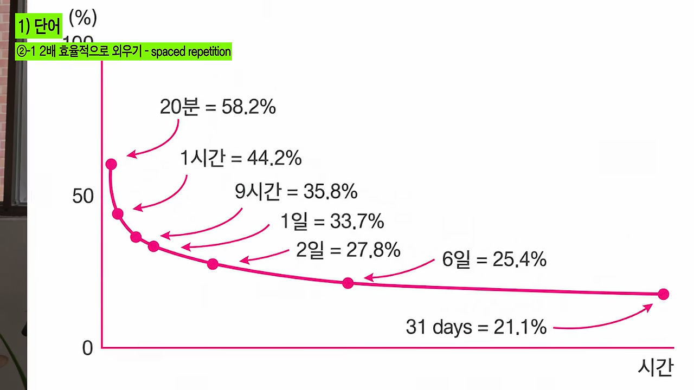
다음 그래프는 복습을 넣었을 때예요. 파란 선이 떨어질 때마다 1st, 4th, 6th, 8th repetition 지점에서 다시 100% 가까이 올라가요. 점선으로 그려진 곡선을 보면 복습할수록 떨어지는 기울기가 완만해져요. 이게 반복되면서 장기 기억으로 넘어간다는 게 화자의 설명이에요.
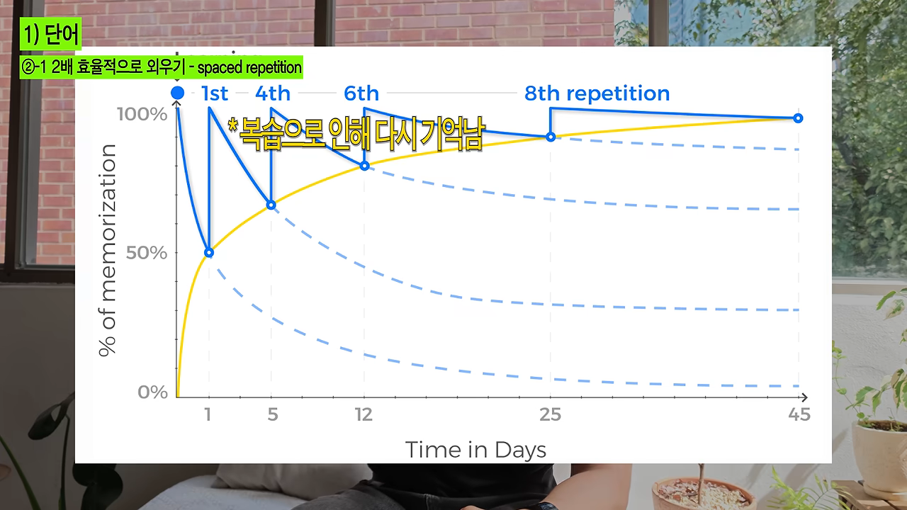
팁 ②-2 능동 회상과 안키 앱
두 번째 기법은 능동 회상이에요. 단어장을 눈으로만 훑지 말고, 영어 단어만 보고 '이게 무슨 뜻이었지?' 하고 스스로 물어보는 거예요. 화자는 이렇게 외우면 시간이 지나도 두 배 넘게 잘 기억난다는 연구가 있다고 해요.
둘을 한 번에 해 주는 도구로 무료 플래시 카드 앱 안키(Anki)를 추천해요. 아래 화면 왼쪽 흰 카드가 앞면이고 가운데에 afford 한 단어만 있어요. 오른쪽 긴 카드가 뒷면으로, 뜻과 예문, 쓰임새 설명이 줄지어 있어요.
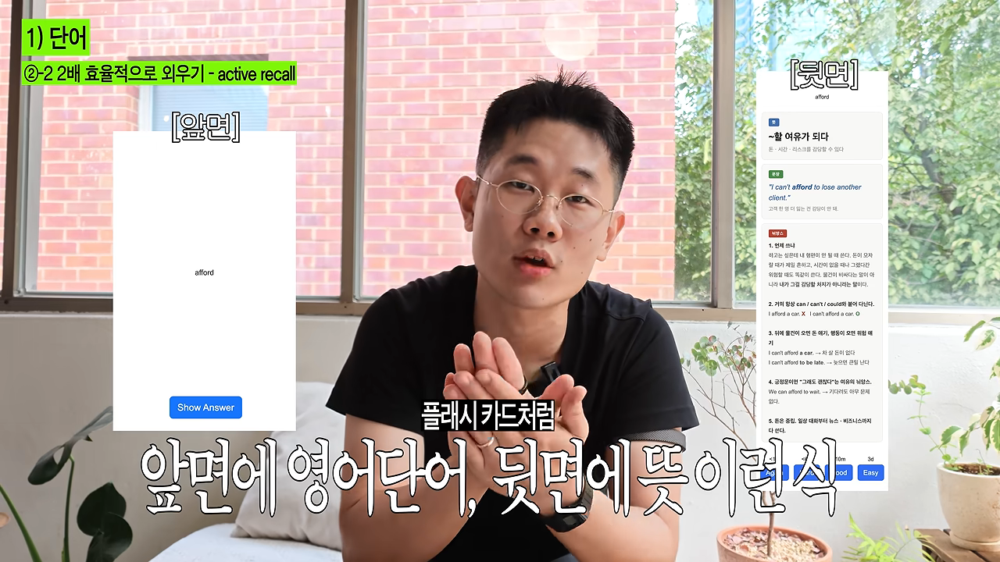
뒷면 맨 아래에는 버튼이 네 개 있어요. 다시, 어려움, 알맞음, 쉬움이고 위에 각각 1분 이내, 6분, 10분, 3일이 적혀 있어요. 누른 버튼에 따라 다음에 그 카드를 언제 다시 보여 줄지가 정해져요. 화자는 말로는 '잘 알면 1번, 아리송하면 2번, 모르면 3번'처럼 세 단계로 설명하는데, 화면 속 앱은 네 단계예요.
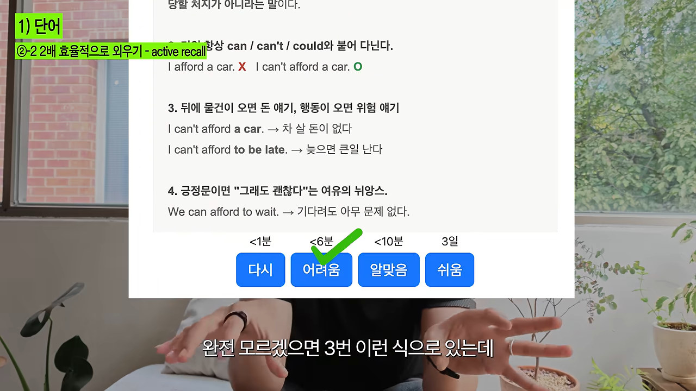
팁 ③ 뜻보다 쓰임새를 외워요
영어 단어와 한국어 뜻을 번갈아 보는 방식은 별로라고 해요. 한국어를 배우는 미국인이 '갈망하다'를 외우고 "나 지금 치킨 너무 갈망해"라고 말하면, 뜻은 통해도 어딘가 어색하죠. 단어가 어디에 어떻게 쓰이는지를 알아야 해요.
그래서 카드 뒷면 맨 위에 뜻, 가운데에 예문을 적고 문장째 외우라고 해요. 위 캡처의 afford 카드가 바로 그 예예요. '뒤에 물건이 오면 돈 얘기, 행동이 오면 위험 얘기'라고 적혀 있어요. 'I can't afford a car'는 차 살 돈이 없다는 뜻이고, 'I can't afford to be late'는 늦으면 큰일 난다는 뜻이에요.
예문을 봐도 감이 안 오면 ChatGPT에 뉘앙스를 물어보라고 해요. 어떤 느낌인지, 부정적으로 들릴 수 있는지까지 알려 준다고 해요. 하루 30개씩 이렇게 외우면 짧은 시간에 단어의 느낌을 잡을 수 있다고 해요.
인풋: 재밌는 콘텐츠를 여러 번
팁 ④ 많이 듣는 게 제일 중요해요
우리가 한국어를 배울 때 엄마가 '이건 주어고 여기엔 타동사가 와' 하고 가르치지 않았어요. 그냥 계속 말을 걸어 줬고, 아기는 그걸 받아들였어요. 화자는 1996년 Science에 실린 논문을 근거로 들어요. 말을 많이 들으면 어디가 단어인지 스스로 찾아낸다는 거예요.
단서가 하나 붙어요. 전혀 못 알아듣는 걸 계속 틀어 놓는다고 되는 건 아니고, 어느 정도 이해할 수 있는 영어를 계속 들어야 한다고 해요. 아래 두 팁이 그 방법이에요.
팁 ⑤ 나를 붙잡는 콘텐츠를 찾아요
여러 번 돌려 볼 수 있을 만큼 재밌는 걸 골라야 해요. 화자에게는 그게 '빅뱅 이론'이었어요. 너무 재밌어서 여덟 번씩 봤고, 시즌 3은 12번 봤다고 해요. 영상에는 The Office, Friends, Modern Family, 빅뱅 이론 포스터가 화자 주변에 떠요.
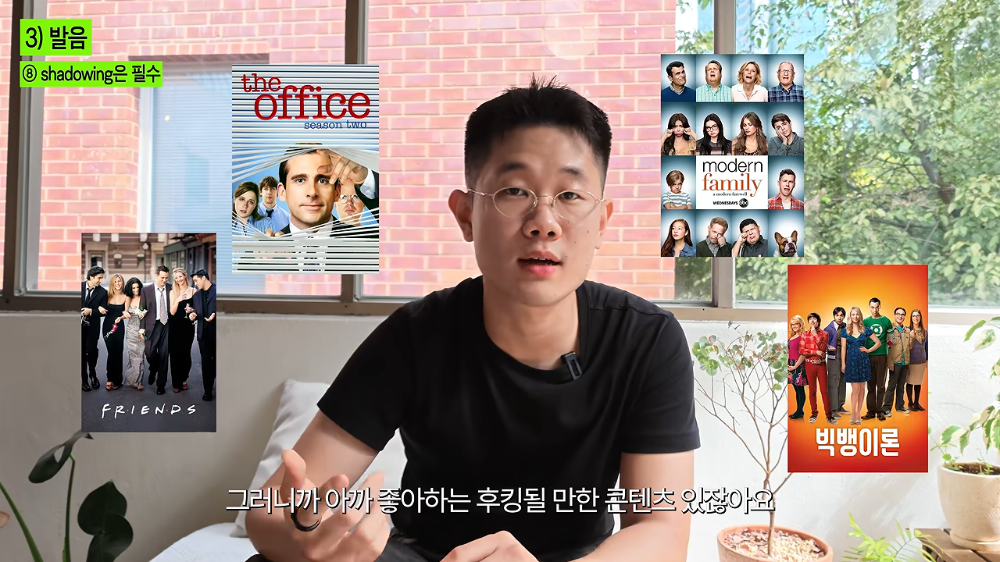
재미가 중요한 이유로 연구 하나를 들어요. 영국과 사우디아라비아에서 영어를 배우는 340명을 조사했더니, 성적을 가장 잘 예측한 건 영어를 얼마나 재밌게 배우는가였다고 해요. 좋아하는 한국 예능은 몇 번이고 돌려 보듯, 그런 미국 콘텐츠를 찾으라는 말이에요.
팁 ⑥ 2-2-2 기법으로 돌려 봐요
콘텐츠를 찾았다고 무작정 보는 게 아니에요. 처음 두 번은 한글 자막, 다음 두 번은 영어 자막, 마지막 두 번은 자막 없이 봐요. 같은 에피소드를 여섯 번 보면 지루하니까, 단위는 시리즈 전체예요. 화면에도 '에피소드 X, 시리즈 전체 O'라는 자막이 떠요.
같은 시리즈를 반복하면 좋은 점이 하나 더 있어요. 한 시즌 안에서는 쓰는 단어가 비슷하게 돌아요. 그래서 여섯 번이 아니라 같은 단어를 몇십 번, 몇백 번 듣게 돼요. 귀만 트이는 게 아니라 구문이 머리에 박혀서 말할 때 저절로 튀어나온다고 해요.
발음: 섀도잉과 발음 기호
Nobody hears your grammar, but everybody hears your accent.
아무도 당신의 문법은 듣지 않지만, 모두가 당신의 억양은 들어요.
— 영상 08:14
팁 ⑦ 발음은 자전거 타기예요
발음은 근육 쓰는 법을 배우는 일이라 자전거 타기와 비슷하다고 해요. 어른이 돼서도 자전거를 배울 수 있듯, 혀를 어떻게 움직이고 성대를 어떻게 올리고 내리는지 이해하면 누구나 나아질 수 있어요. 언어마다 리듬과 음정이 있어서 알아듣지 못해도 일본어인지 중국어인지 구분되죠. 그 리듬을 먼저 잡는 게 중요하다고 해요.
팁 ⑧ 섀도잉은 필수예요
리듬을 가장 효율적으로 익히는 방법이 섀도잉이에요. 화자는 영어 학습자에게 하루 10분씩 8주 동안 섀도잉을 시킨 연구를 소개해요. 전후 녹음을 원어민에게 들려주니 알아듣기 쉬운 정도와 유창성이 크게 나아졌다는 평가가 나왔다고 해요.
방법은 단순해요. 좋아하는 콘텐츠의 대본을 받아 둔 다음, 영상을 틀어 놓고 등장인물이 말하는 대로 바로 따라 말해요. 아래 장면에서 화자는 노트북에 Friends를 틀어 두고 손에 대본을 든 채 따라 하고 있어요.
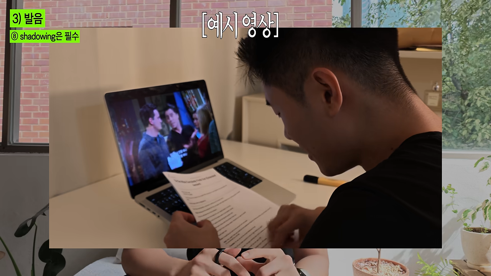
핵심은 어색해도 등장인물과 최대한 비슷하게 말하는 거예요. 대본에는 'I'm going to go to school'이라고 적혀 있어도, 실제로는 연음 때문에 뭉개져서 들려요. 그 들리는 소리를 그대로 따라 해야 해요. 전부 이해해야 한다는 강박은 버리고 그냥 따라 말하라고 해요.
분량은 하루 A4 한 페이지를 다섯 번 반복하는 거예요. 화면에는 Friends 에피소드 대본 한 장 옆에 큰 'X 5'와 '하루 기준'이 떠요.
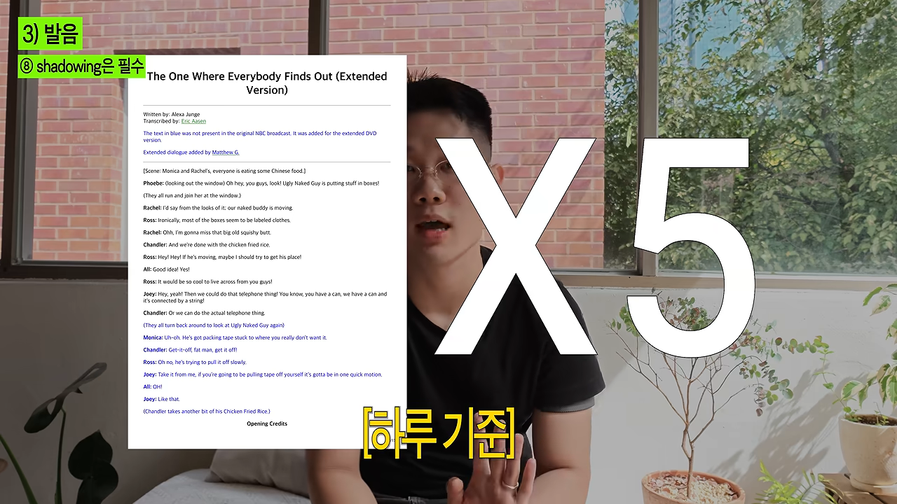
팁 ⑨ 발음 기호 44개를 부숴요
의외로 이 얘기를 하는 사람이 없다고 해요. 영어의 발음 기호는 44개뿐이에요. 기호마다 혀를 어떻게 돌리고 입을 어떻게 움직이는지만 알면, 어떤 단어든 어떻게 읽어야 하는지 알 수 있다고 해요.
팁 ⑩ 안 되는 발음 하나를 골라 잡아요
그럼 44개 중 어디서 시작할까요. 섀도잉을 마친 대본에서 하루 한 문단만 소리 내 읽고, 제일 어색한 발음에 형광펜을 칠해요. 아래 화면에서는 'It would be so cool to live across from you guys'의 live에 동그라미와 '제일 안 되는 발음' 메모가 붙어 있어요. telephone에도 형광펜이 칠해져 있어요.
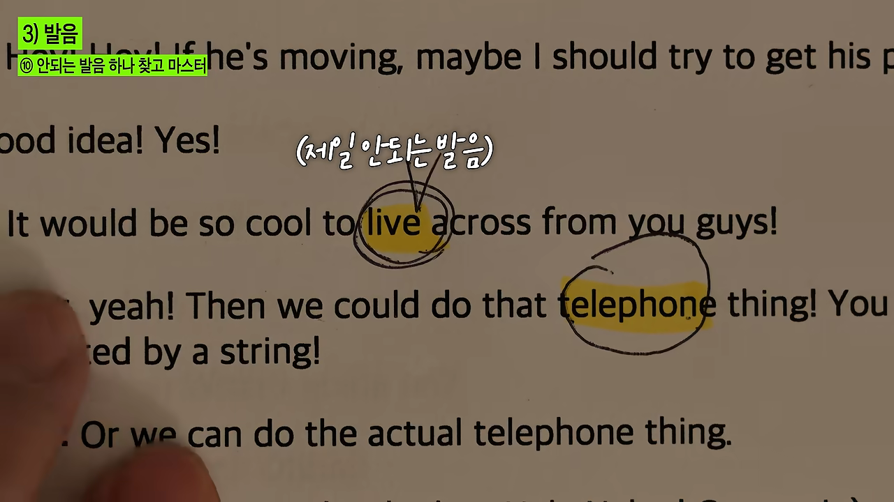
고른 단어는 ChatGPT에 물어봐요. 화면에 나온 프롬프트는 이래요. 발음 기호를 코드 블록으로 한 번 더 적어 달라고 한 건 복사해 두기 쉽게 하려는 거예요.
이 영단어의 미국 기준 발음 기호가 뭐야? 발음도 들을 수 있게 해줘 다른 말은 하지 말고, 그리고 밑에 코드 블락으로 발음 기호를 한번 더 적어줘 쉽게 복붙할 수 있게
영단어: self-correction아래 화면에서 self-correction을 넣자 /ˌself kəˈrekʃən/이라는 발음 기호와 Play 버튼이 나왔어요. 버튼을 누르면 발음을 들을 수도 있어요.
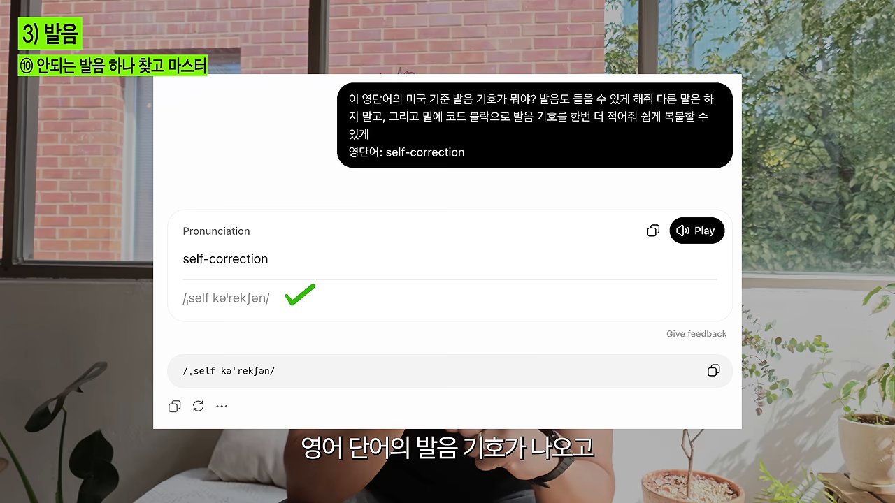
다음은 발음 기호별 강의예요. 화자는 미국인이 아주 쉽게 가르쳐 주는 Rachel's English 채널을 권해요. 한글 자막도 있고, 기호별로 혀를 어떻게 움직이는지 3~5분 영상으로 정리돼 있다고 해요. 화면 오른쪽 목록을 보면 'The UH Vowel', 'The AH Vowel'처럼 모음 하나씩 영상이 나뉘어 있어요.
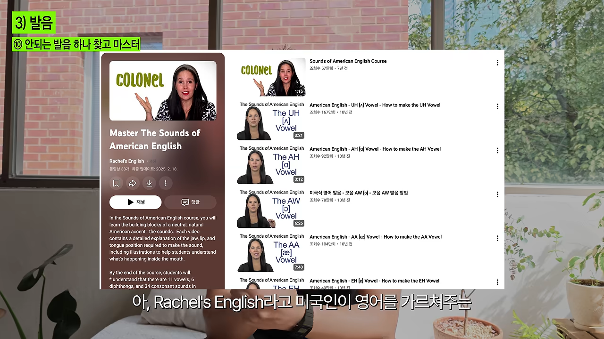
정리하면 하루 흐름은 이래요.
- 섀도잉한 대본에서 한 문단을 읽어요 — 제일 이상한 발음 하나에 형광펜을 칠해요.
- ChatGPT에 미국식 발음 기호를 물어요 — 기호와 소리를 함께 받아요.
- Rachel's English에서 그 기호 영상을 봐요 — 3~5분 영상을 보며 계속 따라 해요.
- ChatGPT에 그 기호가 들어간 단어 15개를 받아요 — 하루 종일 그 15개를 반복해서 읽어요.
팁 ⑪ 텅 트위스터와 랩
발음은 자전거처럼 연습해야 한다고 했죠. 그래서 텅 트위스터나 랩을 권해요. 텅 트위스터는 '경찰청 쇠창살' 같은 말놀이의 영어판이에요. 텅 트위스터를 모아 둔 웹사이트에서 하루에 하나, 혹은 이틀에 하나를 골라 완벽해질 때까지 해요. 화자는 'Peter Piper picked a peck of pickled peppers'를 직접 해 보여요.
일주일 공부 계획
마지막으로 팁들을 하루 일과에 넣는 방법을 정리해요. 화면에 '일주일 공부 플랜' 네 줄이 하나씩 쌓여요. 다 쌓인 화면을 보면 단어, 콘텐츠, 섀도잉, 발음 기호 순이에요.
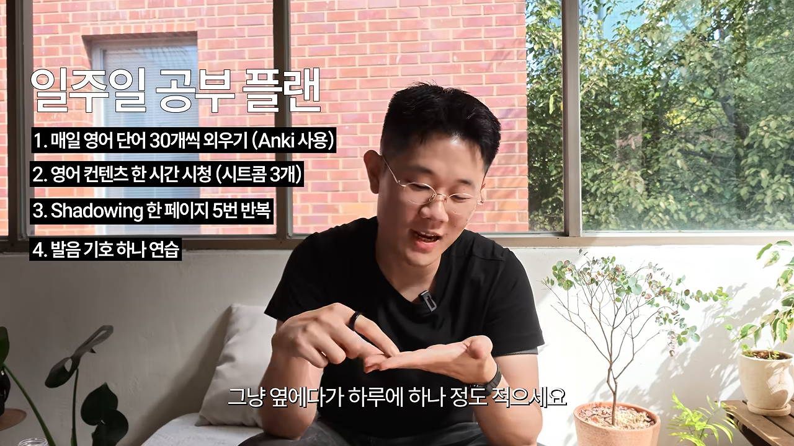
화자가 말로 덧붙인 시간과 때를 함께 보면 이래요.
| 할 일 | 분량 | 언제 |
|---|---|---|
| 안키로 단어 외우기 | 새 단어 30개 + 복습 몇백 개 | 출근길, 줄 설 때, 퇴근길 |
| 영어 콘텐츠 보기 | 20분짜리 시트콤 3개 이상 | 쇼츠 보던 출퇴근 시간 |
| 섀도잉 | 대본 한 페이지 5번 | 퇴근 후 30분 |
| 발음 기호 연습 | 기호 하나 | 퇴근 후 30분 |
| 텅 트위스터 | 하루 하나 | 틈날 때마다 |
단어와 콘텐츠는 원래 버리던 시간을 돌리는 거라, 새로 떼어 내는 시간은 퇴근 후 한 시간 남짓이에요. 화자는 하루 한 시간에서 한 시간 반이면 된다고 말해요. 그리고 6개월에서 1년만 믿고 따라오면 자기와 비슷한 실력이 될 거라며 영상을 마무리해요.